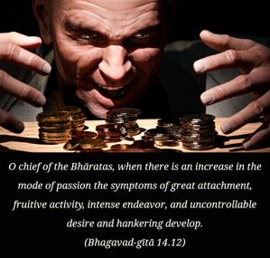
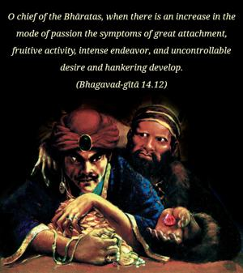
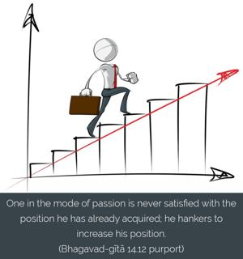

O chief of the Bhāratas, when there is an increase in the mode of passion the symptoms of great attachment, fruitive activity, intense endeavor, and uncontrollable desire and hankering develop.



One in the mode of passion is never satisfied with the position he has already acquired; he hankers to increase his position. If he wants to construct a residential house, he tries his best to have a palatial house, as if he would be able to reside in that house eternally. And he develops a great hankering for sense gratification. There is no end to sense gratification. He always wants to remain with his family and in his house and to continue the process of sense gratification. There is no cessation of this. All these symptoms should be understood as characteristic of the mode of passion.